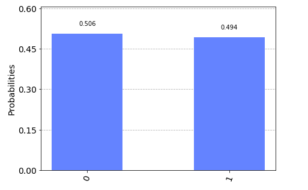
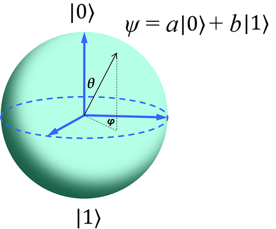

Basics
The main concept leveraged by quantum computers is the ability to act over quantum states. A quantum state is no other thing than a mathematical description of the probability distribution for the potential outcome after performing a measurement upon a system. It sounds tricky but it is simpler than it sounds, bare with me.
Qubits and states
A quantum computer is a device capable of manipulating quantum states in a specific manner. A quantum state is like a complete description of everything you could possibly know about a tiny physical system, a particle, such as an electron or photon, at any given moment. Think of it this way: imagine you have a coin spinning in the air. While it’s spinning, you can’t say it’s definitively heads or tails - it’s in a state of being “both” until it lands. A quantum state is similar, but for particles that are unimaginably small.
These states are represented as a normed vector (vector of length 1) as the probability of outcomes should add up to one (meaning, certainty). Let’s try with the most basic one, a system of a single unit state. The quantum version of a coin looks like:
\[ |\phi\rangle = \left[ \begin{array}{c} \alpha \\ \beta \end{array} \right] \]
being this the minimum representation of a quantum state: a unit norm vector \(\in \mathbb{C}^2\) whose physical realization is known as the qubit. Qubits do not exists (like bit as a matter of fact), these concepts are pure mathematical constructions that have a specific meaning. In our case, the minimum unit we can manipulate in our quantum computer.
It represents the two extremes the system can be at and their probability amplitudes. It means we will observe one or the other if we measure the system and those probabilities must add up to one. The formula for it is as follows, \(|\alpha|^2+|\beta|^2 = 1\) and represents the certainty that the system exists in one of those options.
This state can be decomposed into basic components, the two extreme cases previously mentioned or mathematically speaking, basis states. This is relevant as when it comes to quantum computers, our minimal unit will be expressed on its computational basis: \[ |0\rangle = \left[ \begin{array}{c} 1 \\ 0 \end{array} \right] \quad |1\rangle = \left[ \begin{array}{c} 0 \\ 1 \end{array} \right] \]
We use this simplified Dirac notation just to make it shorter to write, otherwise we will take much of the space writing vectors an matrices. It is funny because those two column vectors will be translated to the already known 0 and 1 bit when we read the state from a classical computer. Classical computers only work with bits so no matter what we do at a quantum level, everything will be then reduced to a set of 0s and 1s. But we will deal with this later when we talk about measurements.
Thus previous state can be described in our qubit unit as:
\[ |\phi\rangle = \alpha |0\rangle + \beta |1\rangle = \left[ \begin{array}{c} \alpha \\ \beta \end{array} \right], \]
meaning our quantum state’s potential outcomes are \(|0\rangle\) with probability \(|\alpha|^2\) and \(|\beta|^2\) odds for \(|1\rangle\). How do we know the actual outcome of our state? Well, we need to measure. This is done by projecting our state over one of those basis states, so the complex conjugate of previous vectors is used to know how likely each option is.
\[ \langle 0 | = \left[ \begin{array}{cc} 1 & 0 \end{array} \right] \quad \langle 1 | = \left[ \begin{array}{cc} 0 & 1 \end{array} \right] \]
By projecting our state into this basis vectors we would obtain:
\[ |\langle 0 |\psi\rangle|^2 = \left|\left[ \begin{array}{cc} 1 & 0 \end{array} \right]\left[ \begin{array}{c} \alpha \\ \beta \end{array} \right]\right|^2 = |\alpha|^2 \]
So we don’t actually evaluate the state, but we use a basis vector to see “how close” our state is to this option that is part of the basis states we are considering.
And here we found one of the first strange things about qubits in comparison to bits. Being 0 and 1 the basic states of a bit, its physical realization can only be in on of those states while qubits can be partially in more than one state creating a superposition of states.
Superposition
This is one of the trickiest things to get when first approaching quantum computing as it is not so intuitive from our macroscopic perspective. It is also often misunderstood, we will try to make it clear. This is an example of a superposed state
\[ |\phi\rangle = \alpha |0\rangle + \beta |1\rangle. \]
The state is a superposition, meaning it is a coin spinning in the air and we do not know which state it will reveal when we stop it to look. Our ability to perceive it is limited by the measurement procedure itself, which also alters the condition of the system (stops the coin from spinning), but it is in a set of probabilities during the spinning that is not entirely tied to one specific option (heads or tails).
We need to project our quantum state into one of the two potential states we can obtain (\(|0\rangle\) or \(|1\rangle\)). Sadly, when measuring only classical bits can be obtained (0 or 1) into our conventional machines (like the laptop or phone you are using right now), so no probability amplitude, no phase… quantum information gets lost in the measurement process and we end up with classical (boring) information.
In order to fully understand the state while spinning we toss the coin several times and check each time which state we get. With that we plot the outcome of probabilities in a graph. The probability histogram is created after a sequence of quantum state creations and measurements we often call SHOTS. With that we get an idea on how the coin look while spinning.

For a series of measurements we have seen \(|0\rangle\) state 50.6% and \(|1\rangle\) state 49.4%. Definitely, looks superposed to me. It is difficult to see from were we stand, but quantum state holds a lot more information than this simple binary choice. In fact, both \(\alpha\) and \(\beta\) are complex numbers, that is why bloch sphere renders a more in detail expression of the state of a qubit. Sadly for us this is something we will never perceive from a real device but it does help while building the formalism or creating algorithms in our heads.
All posible states will be part of the surface of that sphere, this is the potential of a single qubit. Not bad.

Quantum states can therefore be expressed also as if we consider the polar coordinate:¡s
\[ |\phi\rangle = \cos (\theta/2) |0\rangle + e^{i\phi} \sin (\theta/2)|1\rangle \]
which represent the sphere coordinates on the surface of the bloch sphere. It is more evident in this case that rendering simple bits will actually remove most of the information (like phase) contained in the states when operating with them in the quantum regime.
Measurement
Measuring quantum states is a necessary condition to extract information out of it, but by doing so we affect the system due to the collapse of the wave function. I know, too technical.
Ok, so when we observe a quantum state we can only see one of the potential outcomes, the one we observe actualy. And this affects the system, meaning when we look at it it collapses to the state we have observed and no longer exsits as a probability ditribution but as a certainty.
The action we use to observe the quantum state is by means of observables (self-adjoint operators). These are used to project the measurement of a given quantum state to one of its eigenvalues. Using the closeness between quantum state and eigenvectors of the observable we can measure what is the overlap between those. The eigenvectors of the observable form an orthonormal basis for the Hilbert space, therefore each measure corresponds to a mapping to the eigenvectors comprising the basis. I know, this is a little bit too technical but just think about the observable as a pair of tinted glasses, if glasses have a green-ish color, everything will look some sort of green: dark green for black or light green for white. It is kind of like that. Kind of.
We will see that a common observable used is the Pauli \(\sigma_z\) matrix
\[ \sigma_z = \left[ \begin{array}{cc} 1 & 0 \\ 0 & -1 \end{array} \right] \]
We can decompose it on its eigenvectors and eigenvalues so that
\[ \sigma_z|0\rangle = 1|0\rangle \rightarrow \sigma_z|1\rangle = -1|1\rangle. \]
Therefore, any potential measurement will be mapped to one of those two eigenvectors and its eigenvalue used as the outcome of the measurement. The basis set shown above is often known as the computational basis and it will become relevant when we move to actual implementations where this will be fixes by the device itself.
From our previous state \(|\phi\rangle = \alpha |0\rangle + \beta |1\rangle\) and perform a measurement over the computational basis (\(|0\rangle,|1\rangle\)) where evidently the outcome would be \(|0\rangle\) with \(|\alpha|^2\) probability or \(|1\rangle\) with \(|\beta|^2\) probability. But more importantly, a single measurement, no matter how complex, entangled or superposed our state might be, will only be able to recover classical bits mapping two previously seen states (\(|0\rangle \rightarrow 0\) and \(|1\rangle \rightarrow 1\)).
What happens after measurement is performed? Well, that is the trickiest part as the process of measuring obliges to our quantum state to position itself and make a choice. This means our quantum state after measurement will no longer be in a superposition state and will be the outcome of the previous measurement \(|0\rangle\) for the remaining time period.
In order to fully grasp the statistics of the state we should find way to reproduce the state and perform enough measurements, so we can characterize its actual condition as much as we can out of the measurement statistics it presents. Measuring in the basis \(\{|0\rangle, |1\rangle\}\) (also called computational basis) may not be enough to capture the actual state. Therefore, a basis change is needed, but we will see that quantum devices only offer computational basis as the measuring basis. That means in certain cases we will need to rotate our qubits so that the basis change is artificially done.
If we would like to measure in the \(\{|+\rangle, |-\rangle\}\) basis then a rotation of \(-\pi / 2\) in the Y axis will be needed. \(\{|i\rangle, |-i\rangle\}\) basis will require then a rotation over X axis of \(\pi / 2\). That way we get to shift the reference point and measure according to our target axis.
Next thing is to operate on those things, let’s see how gates differ from our knowledge from classical computing.